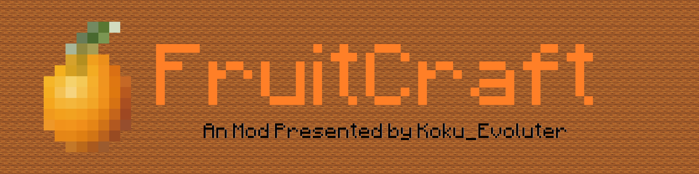

Pleiades - Sora's Sandbox -
Link
Link
Link
Back to Top
Pleiades
Link
Link
Link
Back to Top
Sandbox of Sora
Jump in and Play with us! It'll be fun.

FruitCraft
まもなくBeta-3.0.0登場！
WIP
WIP
FruitCraft
MC Version
1.7.10
Required
Minecraft Forge, KokuLibs
Adds some Juicy Things to your Cubic world.
INTRODUCTION
FruitCraft
はその名の通り、Minecraftの世界に果実などを追加するModです。 オレンジやパイナップルなどの定番から、ゆずのような日本固有のもの、ドラゴンフルーツなどエキゾチックなものも追加します。 それに加え、冷凍庫などの機械、独自の鉱石、溶けるアイスなどを追加します（予定です）。
KokuLibs
Now In Progress....
WIP
WIP
KokuLibs
MC Version
1.7.10
Required
Minecraft Forge
The Base Cords for my Mods.
INTRODUCTION
KokuLibs
は私の作ったすべてのModにおいて前提として必要になるModです。 さまざまな基本的機能を持ちます。 また、「TempSystemCore」も同梱されています。
language
ja-JP
Change Language to
English